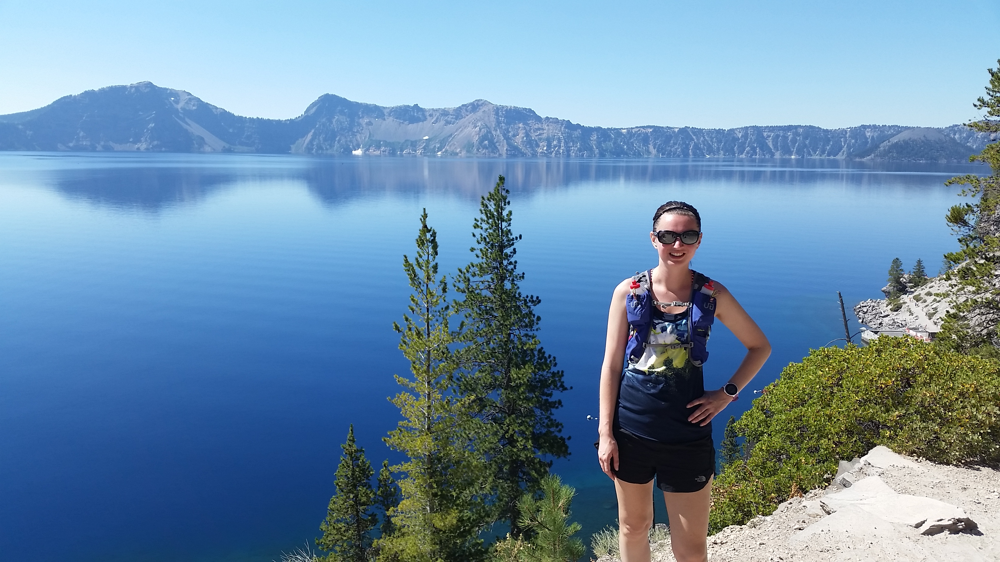
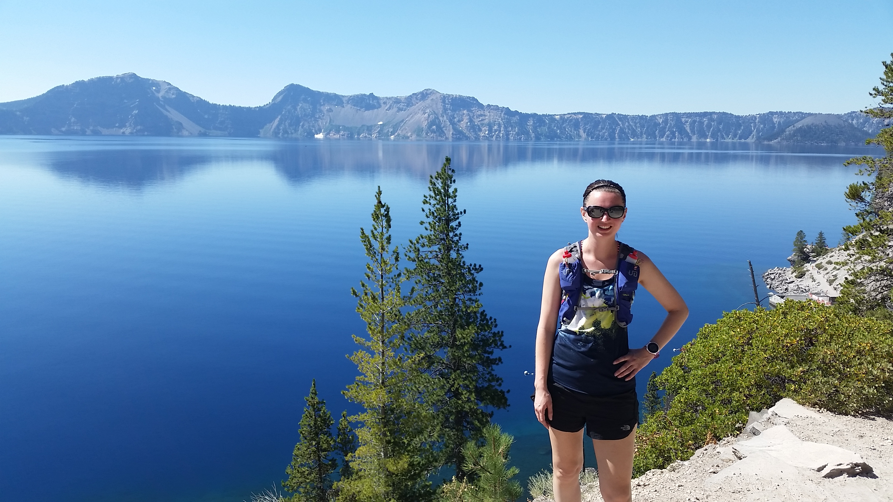
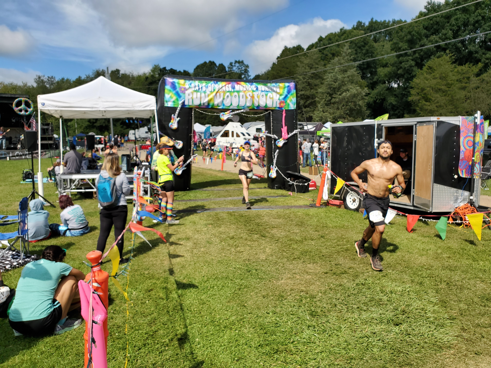
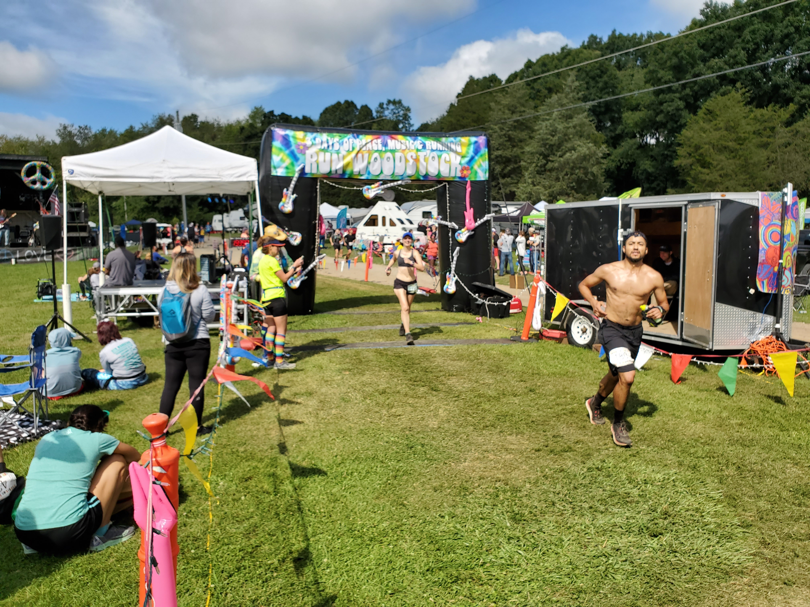
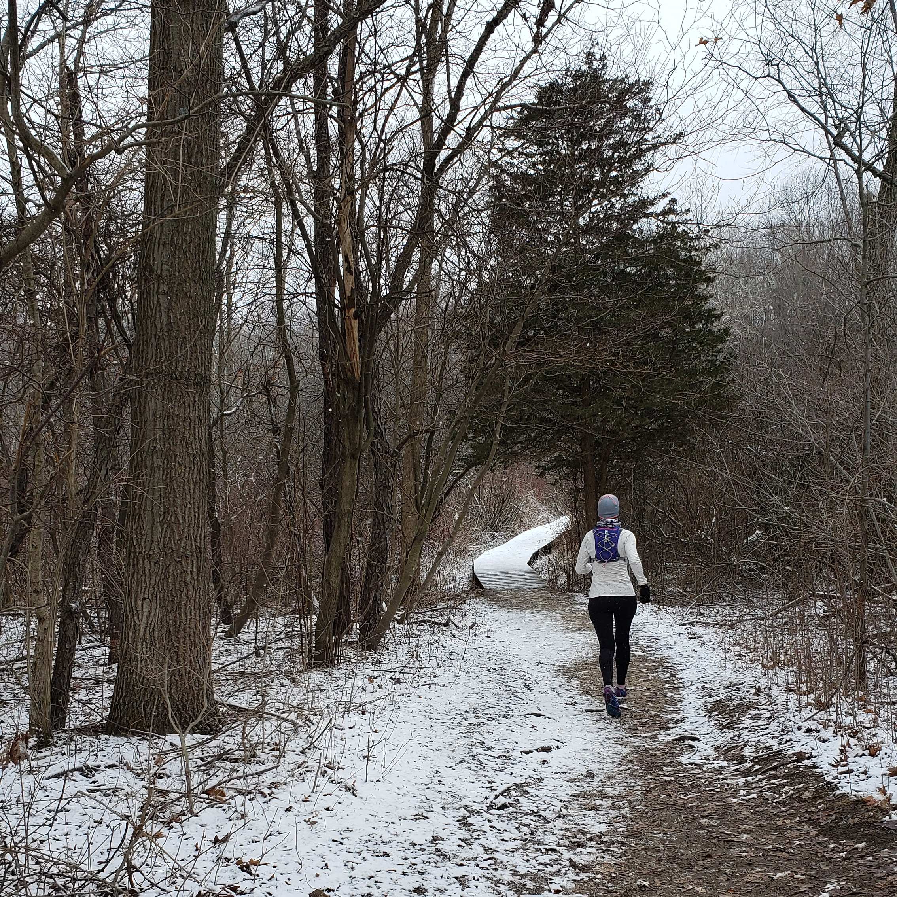
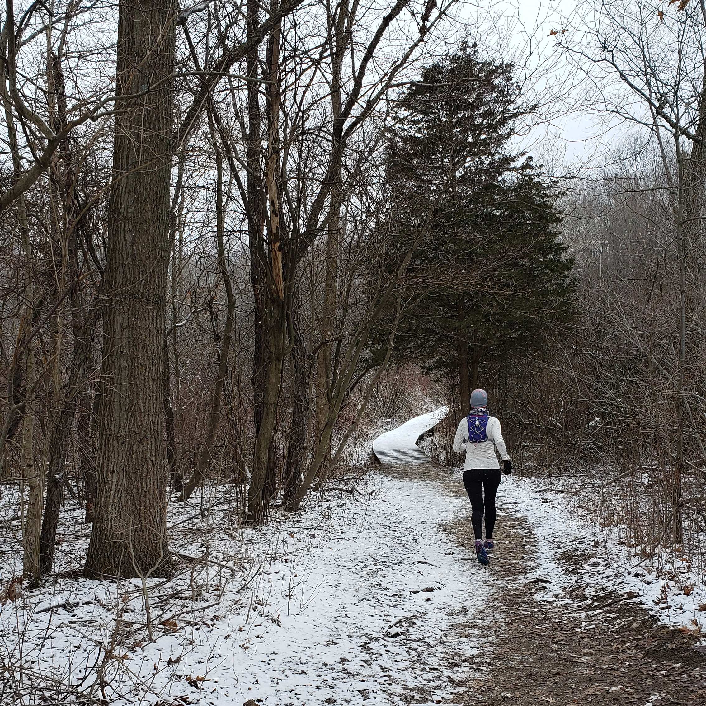

About Heather
Heather Shoecraft is the Training Specialist for the Technical Services Department at the University of Michigan Library and a graduate student at the University of Michigan School of Information. Her coursework is specializing in learning and assessment at academic libraries with a secondary interest in programming and linked data. Her recent work has focused on empowering staff at all levels in the department to think critically about workflow issues they are experiencing and providing them with the tools to resolve those issues. Previous work includes “Building a sustained culture of process improvement using workflow analysis” workshop with colleagues at ER&L 2019, Library as Research Lab: Design Thinking for Libraries fellowship in 2018, and “Managing the E-Resource Ecosystem: Creating a Process for Sustainable E-Resource Life Cycle Workflow Analysis and Oversight” paper with colleagues at ACRL 2015. If she is not at work or school, Heather is probably running. She is currently recovering from running her first ultramarathon in September 2019. Her current projects include facilitating a reading and discussion group for unit managers, collaboratively designing a pilot program to support staff innovation, and serving as an advisor for a change management training pilot.
 



 


 
